Rabbit Anatomy
Head -- Sagittal Section
Evaluate the sagittal section of the rabbit head and identify the following structures:
a. Soft palate -- the soft palate is long and extends caudally, effectively separating the oral cavity from the pharynx. The rabbit is an obligate nasal breather. The epiglottis is engaged dorsal to the soft palate, creating a continuous airway from the nasal cavity to the trachea. This anatomy makes orotracheal intubation challenging, as the tube must be passed blindly around the base of the tongue and past the soft palate.
b. Tongue -- the tongue is large and fleshy, and the torus linguae (a prominent dorsal elevation at the base of the tongue) further limits oropharyngeal visualization. This is another reason why intubation is difficult.
c. Nasal cavity -- the nasal cavity is long and narrow with extensive scrolling of the turbinate bones (maxilloturbinates and ethmoturbinates), providing a large surface area for air conditioning and olfaction. The nasal passages are important in thermoregulation. Pasteurella multocida and other bacteria commonly colonize the nasal cavity, contributing to upper respiratory disease ("snuffles").
d. Nasolacrimal duct -- the nasolacrimal duct follows a tortuous course from the medial canthus of the eye, through the maxillary bone (passing close to the roots of the upper incisor and premolar teeth), and opens at the mucocutaneous junction of the nostril (alar fold). The proximity of the duct to the tooth roots means that dental disease (particularly incisor or premolar root elongation or abscessation) can compress or obstruct the nasolacrimal duct, causing epiphora (excessive tearing) and secondary dacryocystitis.
e. Brain -- note the relatively small brain size relative to the skull. The skull is composed of thin, fragile bones, and the large orbits are separated by only a thin bony septum.
Larynx
The rabbit larynx is small and difficult to visualize due to the anatomy of the oral cavity (small oral opening, large tongue, long soft palate). The following images show the larynx in closed and open positions.
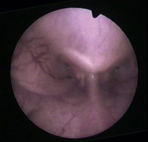 Rabbit larynx in the closed position. Note the small size and the position relative to the soft palate.
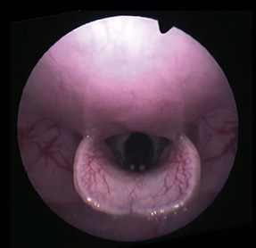 Rabbit larynx in the open position. Visualization of the laryngeal opening is essential for endotracheal intubation, which is one of the most challenging aspects of rabbit anesthesia.
Thoracic Organs
Thymus
The thymus in the rabbit is large and persists into adulthood, unlike in many domestic species. It occupies the cranial mediastinum ventral to the trachea and great vessels. The thymus can be visible on thoracic radiographs and should not be mistaken for a mediastinal mass.
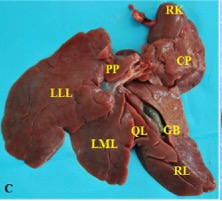
Rabbit thoracic anatomy showing the thymus and associated structures.
Key to thymus illustration:
- Trachea
- Right cranial lobe of the lung
- Thymus (cranial mediastinal portion)
- Heart
- Right middle lobe of the lung
- Right caudal lobe of the lung
- Caudal vena cava
- Diaphragm
- Liver
- Accessory lobe of the lung
- Left caudal lobe of the lung
- Left cranial lobe of the lung (caudal part)
- Left cranial lobe of the lung (cranial part)
- Thymus (cervical portion)
- Left common carotid artery
- Left external jugular vein
- Esophagus
- Right common carotid artery
- Right external jugular vein
- Brachiocephalic trunk
- Cranial vena cava
- Aortic arch
Heart and Great Vessels
The rabbit heart is relatively small compared to body size. The aortic arch gives rise to the brachiocephalic trunk and left subclavian artery. The brachiocephalic trunk divides into the right subclavian artery and a common trunk for both common carotid arteries.
Abdominal Contents
Liver
The rabbit liver is large and multilobed. It is important to identify the individual lobes, as hepatic lobe torsion (particularly of the caudate lobe) is a recognized clinical condition in rabbits.
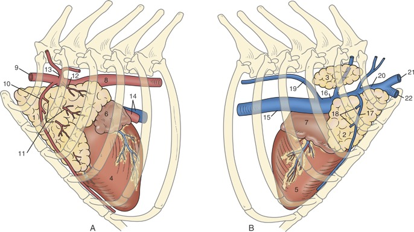 Rabbit liver showing the multiple hepatic lobes. The liver is large relative to body size.
Hepatic lobe abbreviations:
- RLL -- Right lateral lobe
- RML -- Right medial lobe
- QF -- Quadrate fossa (quadrate lobe)
- LML -- Left medial lobe
- LLL -- Left lateral lobe
- CL -- Caudate lobe (caudate process)
- PPC -- Papillary process of the caudate lobe
- GB -- Gallbladder
The gallbladder lies between the right medial lobe and the quadrate lobe. The caudate lobe has both a caudate process (extending toward the right kidney) and a papillary process (extending toward the lesser curvature of the stomach).
Gastrointestinal Tract
The rabbit is a hindgut fermenter with a highly specialized large intestine. The stomach is simple and thin-walled. The small intestine (duodenum, jejunum, ileum) is relatively short compared to the large intestine. The sacculus rotundus (ileocecal tonsil) is a spherical lymphoid organ at the ileocecal junction, unique to rabbits.
Large Intestine
The cecum is the largest organ in the abdominal cavity, accounting for approximately 40% of the total GI tract volume. It is a large, thin-walled, coiled structure with a blind-ending appendix (vermiform appendix) at its tip. The appendix is rich in lymphoid tissue. The cecum is the site of microbial fermentation.
The colon is divided into the proximal colon (with the fusus coli, a pacemaker region that regulates the separation of digestible and indigestible fiber fractions) and the distal colon.
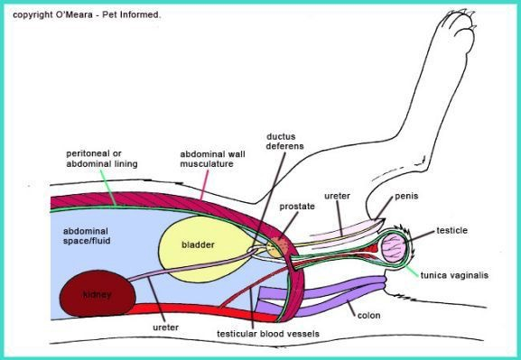 Rabbit large intestine dissected to show the cecum, appendix, and colonic structures.
Key:
- Sacculus rotundus (ileocecal tonsil)
- Cecum (body)
- Cecal appendix (vermiform appendix)
- Ampulla caecalis coli (proximal colon origin)
- Proximal colon (with haustra/sacculations)
- Fusus coli
- Distal colon
- Rectum
The fusus coli is a thickened, darkly pigmented region of the proximal colon that acts as a pacemaker, controlling colonic motility. It is responsible for the separation mechanism that sorts fine digestible particles (which are retropelled back into the cecum for fermentation) from coarse indigestible fiber (which passes distally to be excreted as hard fecal pellets). This mechanism underlies cecotrophy -- the production and ingestion of cecotropes (soft, mucus-coated fecal pellets rich in vitamins, volatile fatty acids, and microbial protein).
Urogenital System
Male Urogenital Anatomy
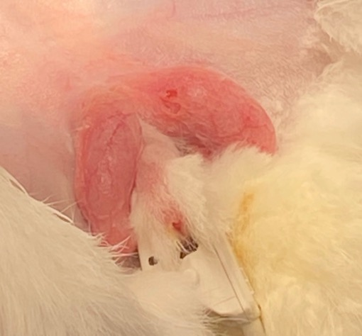 Illustration of the rabbit male urogenital anatomy showing the relationship between the reproductive and urinary structures.
The male rabbit has several notable features:
Testes: The rabbit has large, elongated testes that lie in hairless scrotal sacs located craniolateral to the penis (an unusual position compared to most mammals). The inguinal canals remain open (open inguinal rings), and the testes can be retracted into the abdomen.
Accessory sex glands: Include the vesicular gland (seminal vesicle), prostate gland, and bulbourethral gland (paraprostate).
Inguinal glands: Scent glands located in hairless pouches lateral to the genitalia. These produce a waxy, pheromone-rich secretion used for territorial marking. They can become impacted and require cleaning.
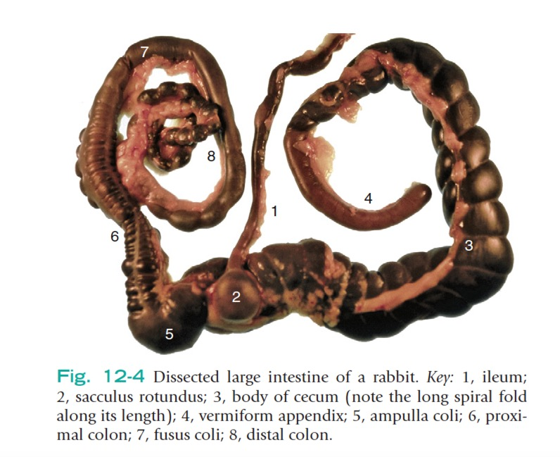 Rabbit scrotal and testicular dissection showing the open inguinal ring and the position of the testes in the scrotal sacs.
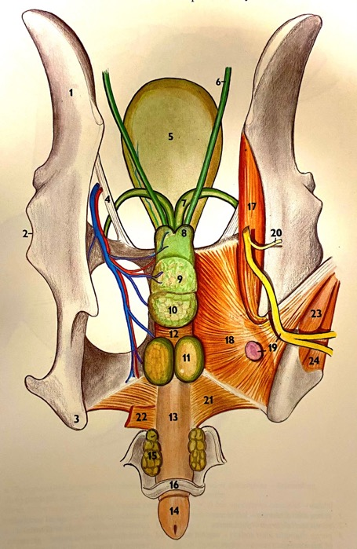 Detailed illustration of the rabbit male urogenital anatomy.
Key to male urogenital anatomy:
- Kidney
- Ureter
- Urinary bladder
- Urethra
- Testis
- Epididymis (head)
- Epididymis (body)
- Epididymis (tail)
- Ductus deferens (vas deferens)
- Vesicular gland (seminal vesicle)
- Prostate gland
- Bulbourethral gland (paraprostate)
- Inguinal gland
- Scrotal sac
- Penis
- Prepuce
- Rectum
- Anus
Female Urogenital Anatomy
The female rabbit has a duplex uterus (uterus duplex) -- two completely separate uterine horns, each with its own cervix that opens independently into the vagina. There is no uterine body. This anatomy is important for surgical planning during ovariohysterectomy, as the surgeon must ligate each uterine horn separately at the level of each cervix.
Rabbits are induced ovulators -- ovulation occurs approximately 10-12 hours after mating, triggered by the coital stimulus. The ovaries are located caudal to the kidneys.
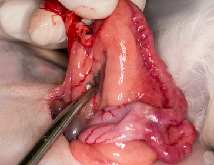 Rabbit female reproductive tract showing the duplex uterus with two separate uterine horns and cervices, and the ovaries.
Uterine adenocarcinoma is one of the most common neoplasms in intact female rabbits, with prevalence increasing significantly with age (up to 60-80% in some breeds by 4-6 years of age). This is a primary indication for elective ovariohysterectomy in pet rabbits.
Paranasal Cavities
The rabbit has extensive and complex paranasal sinuses and nasal cavities. The turbinate bones are highly scrolled, providing a large surface area. The maxillary recess is located lateral to the nasal cavity and is closely associated with the roots of the premolar and molar teeth.
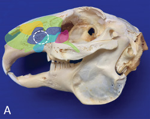 A. Illustration of the rabbit paranasal cavities showing the complex arrangement of turbinate bones and sinuses.
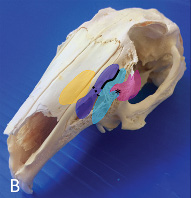 B. Photograph of a rabbit skull sectioned to show the paranasal cavities and the relationship between the nasal passages and the dental arcades.
The close association between the tooth roots and the nasal cavity/sinuses explains why dental disease in rabbits frequently leads to secondary rhinitis, dacryocystitis, and retrobulbar abscesses. Periapical infections of the upper cheek teeth can extend into the nasal cavity or orbit.
References: Varga M. Textbook of Rabbit Medicine. 2nd ed. Oxford: Butterworth-Heinemann; 2014. Quesenberry KE, Mans C, Orcutt C, Carpenter JW. Ferrets, Rabbits, and Rodents: Clinical Medicine and Surgery. 4th ed. St. Louis: Elsevier; 2021.